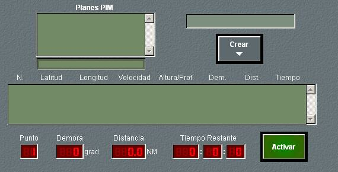
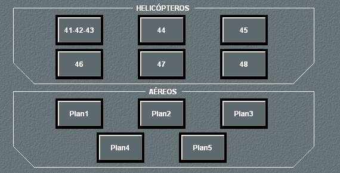

Planes
En todas las unidades, excepto las bases, al pulsar en la zona de planes, dentro del área de dinámica, se abre un panel en el que se pueden seleccionar siete solapas correspondientes a los siguientes tipos de planes:
Planes PIM: Permite establecer y ejecutar un plan PIM. Está disponible para todos los tipos de unidades excepto bases.

Patrullas: Permite calcular y dibujar diferentes tipos de patrullas. Está disponible para todos los tipos de unidades, excepto bases y terrestres.

Búsquedas: Permite calcular y dibujar diferentes maniobras de búsqueda. Está disponible para todos los tipos de unidades, excepto bases y terrestres.

Planes (Aéreos y Helicópteros): Permite calcular y dibujar diferentes planes aéreos y de helicópteros. Está disponible exclusivamente en unidades superficie, aviones y helicópteros.

Zig-Zag: Permite calcular, dibujar y ejecutar planes zig-zag. Está disponible exclusivamente en unidades superficie y submarinas.

Búsquedas ASW: Permite calcular y dibujar maniobras de búsquedas ASW. Está disponible exclusivamente en unidades de superficie y helicópteros.